The 12 races and 60 lineages, with the approved reference art.
Version: 1.0
Status: Approved roster and approved lineage art
(Lineage Handbook)
Scope: 12 base races · 5 lineages per race · 60
playable lineages
Companion design: Everbound class and specialization
system
This compendium establishes the lineage/ancestry choices for each of Everbound's 12 playable base races. A lineage is a recognizable ancestral variety, body/material type, or (for humans) regional heritage—not a class, subclass, or skill-tree name. Each lineage has a visual or cultural identity and a core natural specialty to guide later racial skill design.
Character-building rule: Any race and lineage may choose any of the six official classes. A lineage specialty describes an area of aptitude, not an automatic granted power or class restriction. Numerical bonuses, unlock levels, active abilities, limitations, and capstones will be defined in the subsequent racial skill-tree design phase.
Art consistency: Preserve Everbound's approved Painterly JRPG character direction and base-race anatomy. Lineage variation should remain recognizable within the base race; skin, hair, feather, eye, and scale colors are not automatically gameplay powers.
| Base race | Number of lineages | Lineages |
|---|---|---|
| Human | 5 | Highlander; Coastlander; Plainsfolk; Dune Dweller; Frostlander |
| Elf | 5 | High Elf; Wood Elf; Moon Elf; Deep Elf; Frost Elf |
| Dwarf | 5 | Mountain Dwarf; Hill Dwarf; Deep Dwarf; Ember Dwarf; Crystal Dwarf |
| Halfling | 5 | Hillfoot; Woodfoot; Riverfoot; Marshfoot; Cavefoot |
| Orcborn | 5 | Mountain Orc; Steppe Orc; Ash Orc; Marsh Orc; Frost Orc |
| Beastkin | 5 | Wolfkin; Foxkin; Catkin; Rabbitkin; Bearkin |
| Drakari | 5 | Wyrmkin; Serpentkin; Drakekin; Crystaldrake; Thornscale |
| Ashborn | 5 | Cinderborn; Duskhorn; Paleash; Thornhorn; Smokeborn |
| Sylph | 5 | Butterfly Sylph; Moth Sylph; Dragonfly Sylph; Cicada Sylph; Lacewing Sylph |
| Tidekin | 5 | Riverkin; Sharkkin; Reefkin; Raykin; Deepkin |
| Skyborn | 5 | Hawkin; Eaglekin; Falconkin; Owlkin; Ravenkin |
| Forgeborn | 5 | Stoneforged; Ironforged; Bronzeforged; Woodforged; Crystalforged |
| TOTAL | 60 | 12 races × 5 lineages |
Base identity: Adaptable human communities with broad variation in appearance and no required supernatural anatomy. Human lineages represent regional heritages and learned traditions, not biologically fixed traits.
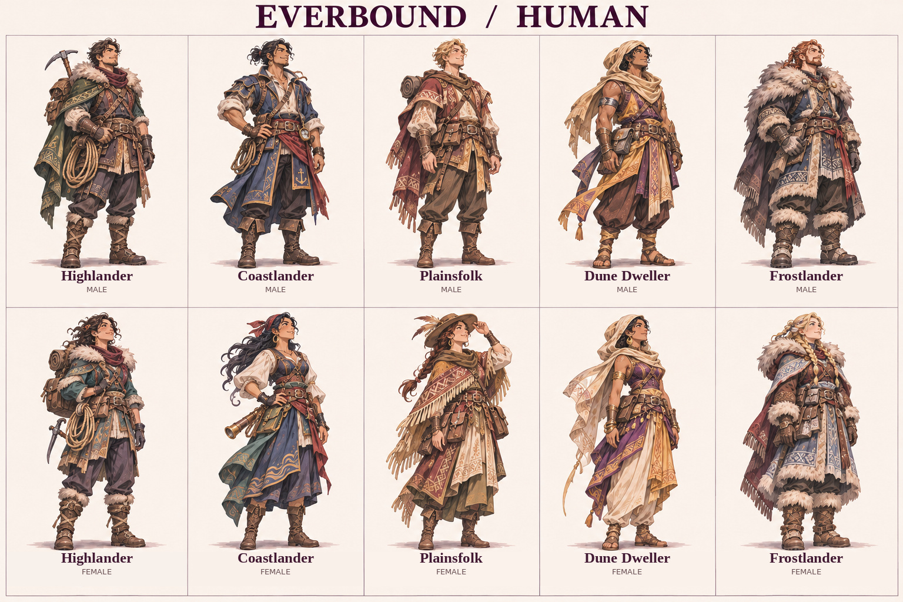
| Lineage | Identity / visual cues | Core natural or learned specialty | Future skill-tree direction |
|---|---|---|---|
| Highlander | Origin in mountain settlements; practical cold-weather climbing equipment | Endurance, climbing | Vertical traversal, difficult-terrain travel, persistence |
| Coastlander | Coastal settlements; seafaring dress and equipment | Sailing, swimming | Navigation, water survival, shipboard movement |
| Plainsfolk | Open grassland and caravan communities | Travel, navigation | Routefinding, long-distance travel, awareness |
| Dune Dweller | Arid-region communities; heat-adapted clothing and equipment | Heat survival, resource conservation | Heat management, waterfinding, expedition logistics |
| Frostlander | Northern settlements; layered winter gear and traditions | Cold-weather survival, perseverance | Cold-environment resilience, survival, morale |
Design note: Human appearance is freely customizable; ancestry does not prescribe skin tone or physical features. Lineage specialties should reflect background and training.
Base identity: Tall, slender humanoids with pointed ears, luminous irises, and sensitivity to the natural and magical world.
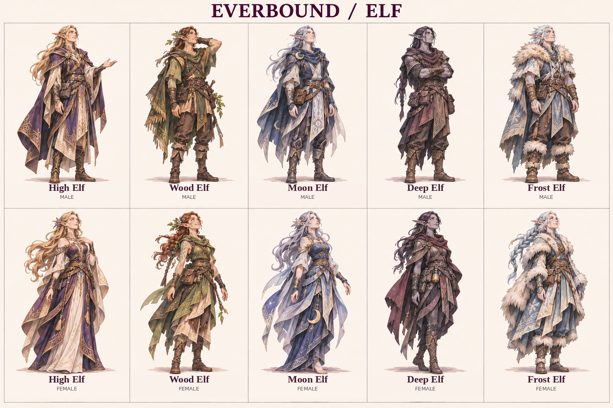
| Lineage | Identity / visual cues | Core specialty | Future skill-tree direction |
|---|---|---|---|
| High Elf | Luminous irises, refined features, long-lived magical traditions | Arcane sensitivity | Spell sensing, magical understanding, resonance |
| Wood Elf | Forest-adapted traditions, earth-toned markings and dress | Forest awareness, stealth | Tracking, wilderness concealment, woodland traversal |
| Moon Elf | Cool-toned appearance, prominent reflective irises | Night perception | Low-light detection, nighttime awareness, hidden-threat detection |
| Deep Elf | Dim-environment adaptations, subdued coloration | Darkness adaptation | Underground perception, shadow navigation, sensory focus |
| Frost Elf | Cold-region adaptations, pale or frostlike markings | Cold resilience | Harsh-weather endurance, environmental survival, composure |
Design note: Lineage is not a personality, moral alignment, or mandatory class assignment.
Base identity: Short, broad, strong humanoids with dense builds, substantial hands, and traditions of craft and earth knowledge.
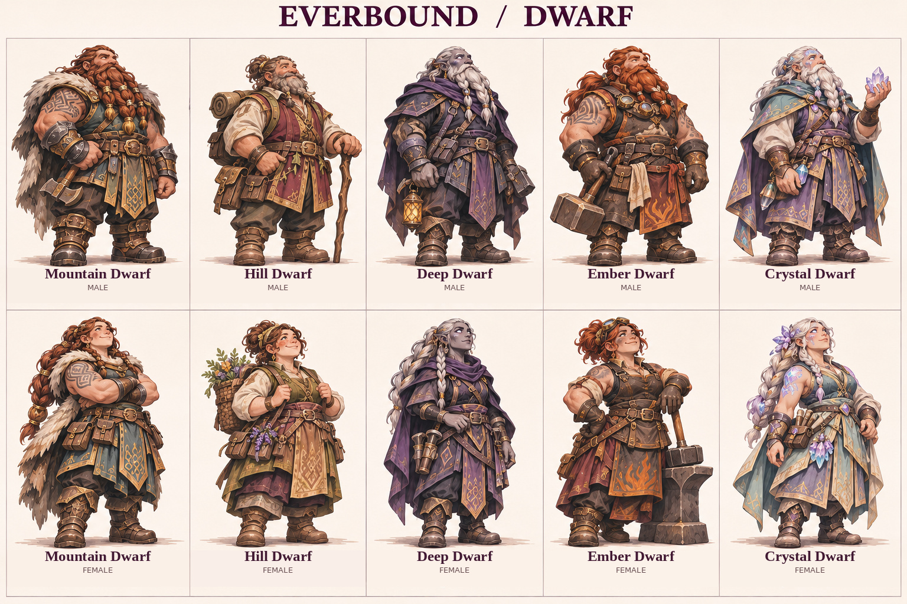
| Lineage | Identity / visual cues | Core specialty | Future skill-tree direction |
|---|---|---|---|
| Mountain Dwarf | Broad frame, dense musculature | Strength, endurance | Load bearing, sturdy footing, prolonged exertion |
| Hill Dwarf | Compact build, steady gait, sturdy feet | Stamina, balance | Grounded movement, resistance to displacement, persistence |
| Deep Dwarf | Dim-adapted eyes, muted coloring | Underground perception | Cave navigation, hazard recognition, low-light sensing |
| Ember Dwarf | Ruddy or ash-grey features, heat-adapted heritage | Heat tolerance | Forge and volcanic environments, heat resilience |
| Crystal Dwarf | Subtle mineral markings, reflective irises | Resonance, mineral sensing | Geological perception, vibration awareness, material analysis |
Design note: All lineages retain recognizable adult Dwarf proportions; material features are subtle, not a replacement with a constructed body.
Base identity: Compact adult humanoids, roughly three feet tall, known for dexterity and practical ingenuity.
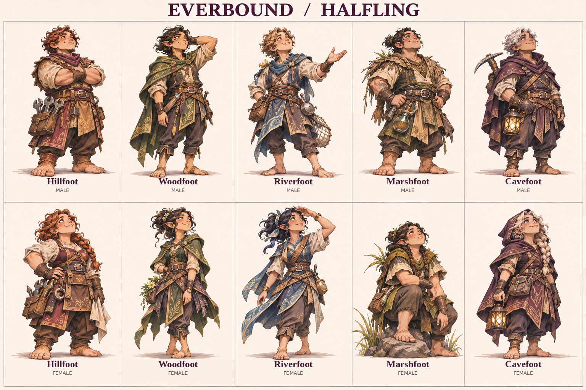
| Lineage | Identity / visual cues | Core specialty | Future skill-tree direction |
|---|---|---|---|
| Hillfoot | Compact, sturdy build; broad feet | Endurance, balance | Sure footing, long treks, stable movement |
| Woodfoot | Leaner build, nimble hands and feet | Stealth, climbing | Concealment, climbing, natural cover |
| Riverfoot | Flexible feet, streamlined movement | Swimming, agility | Water movement, nimble repositioning |
| Marshfoot | Wide-set feet, strong lower legs | Difficult-terrain movement | Mud, marshes, soft-ground traversal |
| Cavefoot | Low-light-adapted eyes, compact build | Underground navigation | Tunnel navigation, dark-area awareness, confined spaces |
Design note: Halflings remain clearly adult, not childlike or chibi.
Base identity: Tall and powerful humanoids with visible lower tusks, heavy brows, and diverse skin tones.
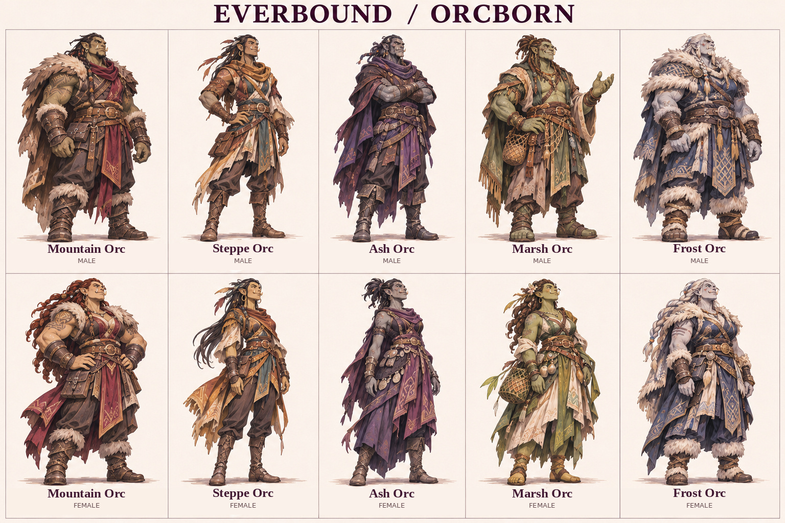
| Lineage | Identity / visual cues | Core specialty | Future skill-tree direction |
|---|---|---|---|
| Mountain Orc | Massive frame, heavy tusks, wide shoulders | Strength, durability | Powerful exertion, holding ground, resilience |
| Steppe Orc | Lean musculature, long limbs | Speed, stamina | Running, pursuit, sustained travel |
| Ash Orc | Grey or charcoal skin, weathered features | Heat and hazard resistance | Environmental endurance, hazardous-ground traversal |
| Marsh Orc | Broad hands and feet, green-toned skin variations | Swimming, resilience | Wetland survival, aquatic movement, tough footing |
| Frost Orc | Dense physique, pale grey skin variations | Cold tolerance, endurance | Winter survival, prolonged exertion |
Design note: An Orcborn lineage does not determine temperament, morality, or role.
Base identity: Humanlike faces, torsos, hands, and legs, with lineage-specific animal ears, animal-influenced eyes, and one appropriate tail. No animal muzzle, animal head, or second set of human ears.
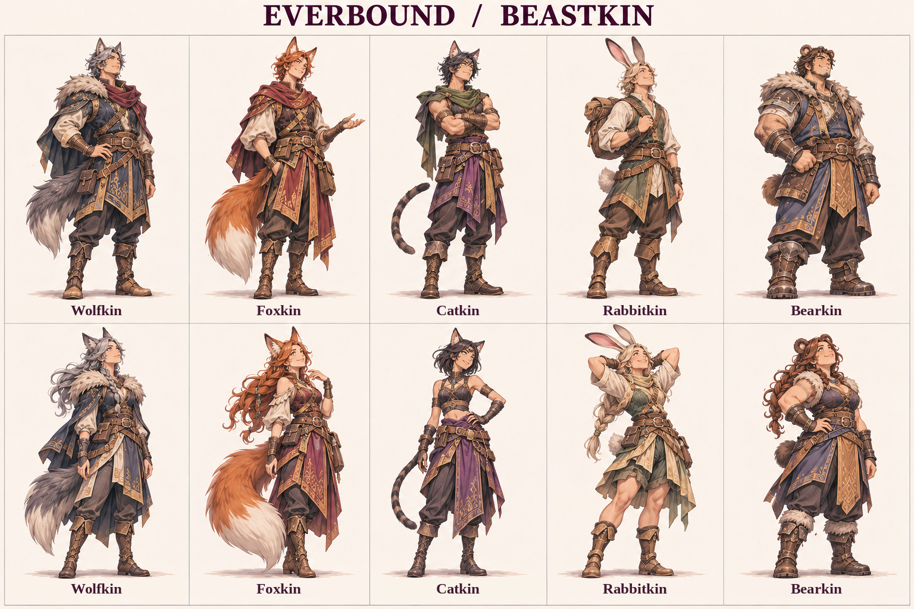
| Lineage | Identity / visual cues | Core specialty | Future skill-tree direction |
|---|---|---|---|
| Wolfkin | Wolf ears, bushy wolf tail | Tracking, pack coordination | Scent tracking, coordinated action, shared target awareness |
| Foxkin | Pointed fox ears, large fox tail | Cunning, deception, agility | Misdirection, rapid movement, reading intentions |
| Catkin | Cat ears, slender feline tail, keen eyes | Balance, reflexes, precision | Landing, evasive timing, precise movement |
| Rabbitkin | Long rabbit ears, small rabbit tail, strong legs | Jumping, speed, evasion | Leaping, sudden escapes, threat awareness |
| Bearkin | Rounded bear ears, small bear tail, sturdy frame | Strength, endurance, protection | Strength, defensive resilience, sheltering allies |
Final selection: Only these five Beastkin lineages. Lionkin, Tigerkin, Deerkin, Otterkin, and Badgerkin are excluded from the current playable roster.
Base identity: Humanoid dragon descendants with scales on cheeks and forearms, swept-back horns, and slit pupils. No automatic wings or unrestricted breath weapons.
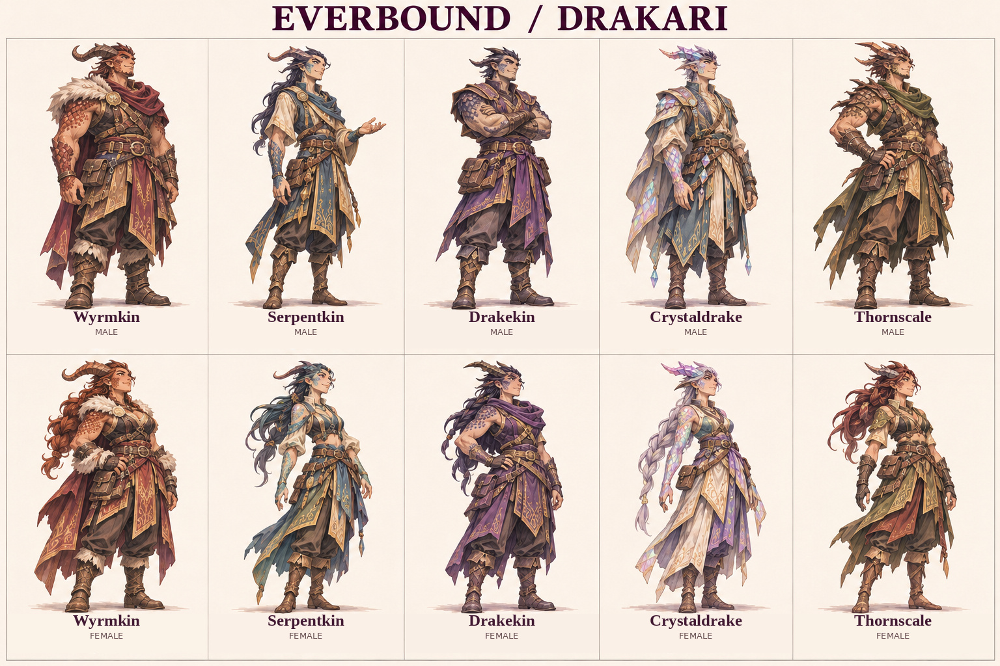
| Lineage | Identity / visual cues | Core specialty | Future skill-tree direction |
|---|---|---|---|
| Wyrmkin | Heavy scales, broad horns, powerful frame | Strength, resilience | Physical endurance, heavy impacts, sturdy stance |
| Serpentkin | Fine scales, slender frame, swept horns | Agility, flexibility | Flowing movement, evasion, body control |
| Drakekin | Thick scales, pronounced brow ridges | Endurance, close combat | Melee pressure, guarding, physical resilience |
| Crystaldrake | Faceted scale patterns, crystalline horn ridges | Magical resonance, perception | Detecting magic, sensing disturbances, energy awareness |
| Thornscale | Raised scale ridges, pronounced horn structures | Defense, counterattacks | Guarding, counterforce, protective response |
Design note: Bronze, blue, ember-red, jade, and pearl scale colors are independent appearance options. Color does not dictate ancestry, affinity, or powers.
Base identity: Humanoids with curved horns, slender tails, ember-bright eyes, and ash-grey to crimson skin variations; not inherently evil.
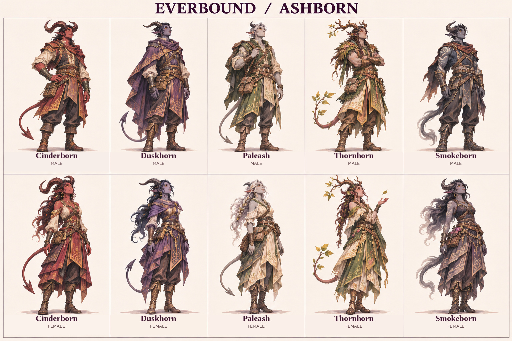
| Lineage | Identity / visual cues | Core specialty | Future skill-tree direction |
|---|---|---|---|
| Cinderborn | Crimson skin, prominent curved horns | Heat resistance | Heat and fire-hazard resilience |
| Duskhorn | Dark-violet skin, swept-back horns | Shadow perception | Low-light awareness, concealed-threat detection |
| Paleash | Pale grey skin, finer horns | Magical sensitivity | Sensing magic, arcane disturbances |
| Thornhorn | Branching horns, distinctive tail | Defensive resilience | Sturdy defense, reacting to contact |
| Smokeborn | Charcoal complexion, smoke-like markings | Concealment, environmental awareness | Cover, obscured terrain, hazard sensing |
Design note: Horn and tail morphology can vary, but default Ashborn anatomy never requires dragon scales or wings.
Base identity: Light adult humanoids with translucent, veined insectlike gossamer wings and shimmering freckles. Wings enable controlled gliding rather than unrestricted flight.
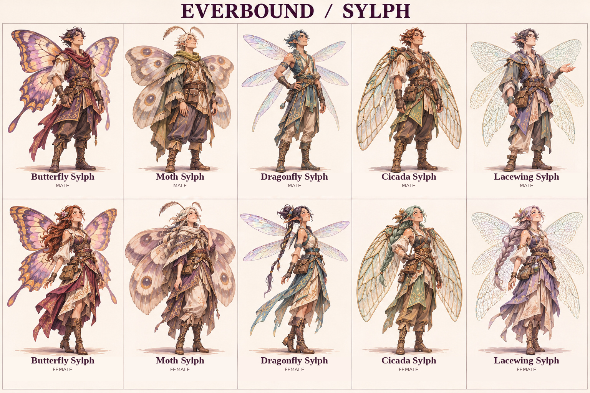
| Lineage | Identity / visual cues | Core specialty | Future skill-tree direction |
|---|---|---|---|
| Butterfly Sylph | Broad, patterned translucent wings | Grace, visual misdirection | Gliding, wing-display distractions, graceful movement |
| Moth Sylph | Rounded wing shapes, soft markings, optional antennae | Night senses, concealment | Darkness awareness, quiet movement |
| Dragonfly Sylph | Four narrow gossamer wings, slender frame | Rapid movement, reflexes | Direction changes, evasion, controlled descent |
| Cicada Sylph | Strongly veined wings, distinct wing-root markings | Vibration and sound sensing | Acoustic awareness, vibration detection |
| Lacewing Sylph | Delicate, intricate transparent wing veining | Precision, controlled gliding | Fine flight control, precise positioning |
Design note: Preserve Sylph's wing-based physical identity across every lineage. Never substitute feathered Skyborn wings.
Base identity: Amphibious-looking humanoids with neck gills, webbed fingers, finlike ears, and iridescent scale patches. Two legs and feet—not mermaid tails.
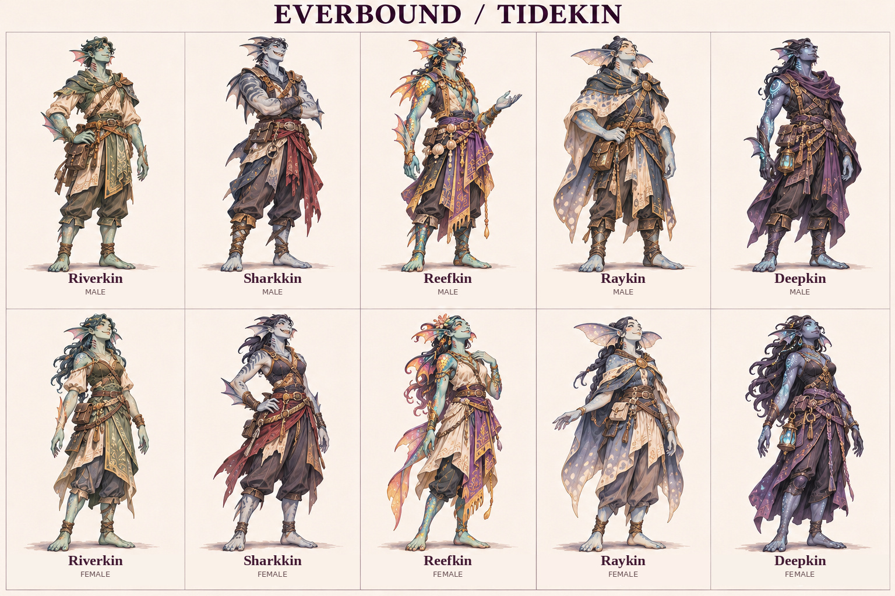
| Lineage | Identity / visual cues | Core specialty | Future skill-tree direction |
|---|---|---|---|
| Riverkin | Subtle freshwater scale patterns, compact fins | River navigation, current sensing | Navigating currents, swimming, freshwater survival |
| Sharkkin | Sharklike fin styling, sharper teeth | Predator senses, strength | Detecting movement, physical pursuit, aquatic awareness |
| Reefkin | Bright scale patterns, ornamental fins | Camouflage, environmental awareness | Blending with surroundings, reefs and shoreline navigation |
| Raykin | Broad finlike ear structures, flattened scale patterns | Fluid movement, defense | Flowing repositioning, defensive turning |
| Deepkin | Dark scales, subtle bioluminescent markings | Low-light vision, pressure tolerance | Deep-water awareness, darkness adaptation |
Final selection: Only these five Tidekin lineages. Eelkin is removed from the playable roster.
Design note: Tidekin traits need useful applications during land-based adventures; water should improve their options, not be mandatory.
Base identity: Avian humanoids with full bird heads (beak, avian eyes and a feathered crest, matching the approved lineage art), feathered wings behind their shoulders, two arms, two legs, and avian feet. Wing-assisted movement does not mean unrestricted flight.
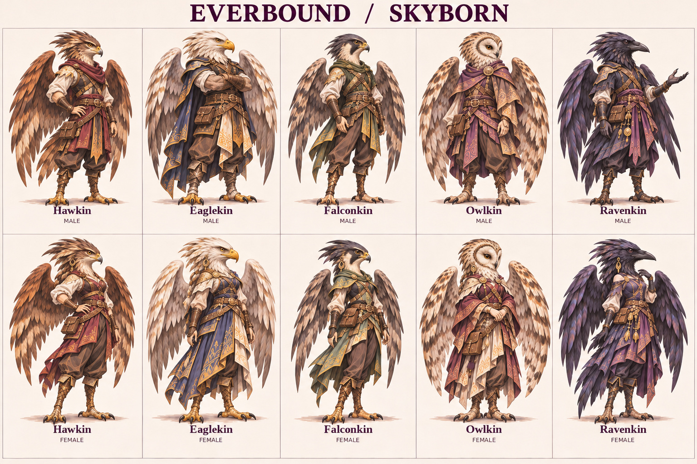
| Lineage | Identity / visual cues | Core specialty | Future skill-tree direction |
|---|---|---|---|
| Hawkin | Hawk-inspired crest, strong wings, sharp eyes | Tracking, aerial positioning | Long sightlines, surveying terrain, positional movement |
| Eaglekin | Broad wings, powerful build, prominent crest | Strength, distant vision | Long-range perception, soaring control, powerful positioning |
| Falconkin | Streamlined wings, lean frame | Speed, precision | Rapid descent, accuracy, reactive movement |
| Owlkin | Rounded feather patterns, broad wings, owl features | Night vision, silent movement | Low-light detection, quiet gliding, stealth |
| Ravenkin | Ravenlike plumage and crest, expressive eyes | Intelligence, memory | Observation, recall, clever tactics |
Final selection: Only these five Skyborn lineages. Crowkin, Heronkin, Kingfisherkin, Vulturekin, and Albatrosskin are excluded from the current playable roster.
Base identity: Awakened souls in clearly constructed humanoid bodies, with a visible chest core gem and rune seams. Magical craftsmanship rather than science-fiction robotics.
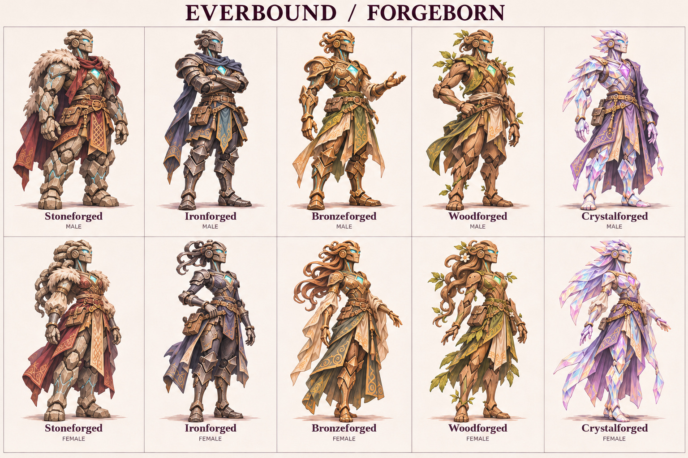
| Lineage | Identity / visual cues | Core specialty | Future skill-tree direction |
|---|---|---|---|
| Stoneforged | Carved stone body, heavy joints | Physical durability | Fortification, structural stability, damage resilience |
| Ironforged | Forged iron plates, reinforced joints | Strength, defense | Heavy exertion, guarding, sturdy stance |
| Bronzeforged | Bronze plates, intricate crafted details | Precision, adaptability | Accurate manipulation, coordination, flexible mechanisms |
| Woodforged | Livingwood or carved timber body | Regeneration, nature affinity | Natural renewal, wood-based resilience, repair |
| Crystalforged | Crystal facets, translucent constructed sections | Magical energy sensitivity | Resonance, magical perception, power regulation |
Design note: All Forgeborn retain constructed faces/bodies and visible core gems. Any effects on healing, poison, exhaustion, and repair must be explicitly balanced in the rules rather than assumed.
For each lineage, future design should specify:
| Field | Definition |
|---|---|
| Core identity | What makes this lineage visually and thematically distinct |
| Innate trait | One modest, immediately recognizable starting feature |
| Mechanical niche | Specialty that complements—but does not replace—a class |
| Racial skill branches | Two or three coherent directions based on the lineage's ancestry |
| Active skills | Limited-use actions unlocked through racial progression |
| Passive skills | Modest improvements to natural strengths |
| Capstone | A high-tier expression of lineage mastery |
| Exploration use | Meaningful benefit outside combat |
| Constraints | Clear boundaries to prevent overpowered mobility, defenses, or utility |
| Art direction | Approved anatomy, silhouette, and appearance variables |
Balance guardrails: No unrestricted starting flight; no automatic elemental powers based solely on color; no lineage should require a particular terrain to remain playable; no lineage should invalidate another class's central role.
Approved roster adjustments:
Next step: Design detailed racial skill trees for the 60 lineages, using this roster as the naming and identity reference.
EVERBOUND — The Living Adventurers Guild · Racial Lineage Compendium v1.0